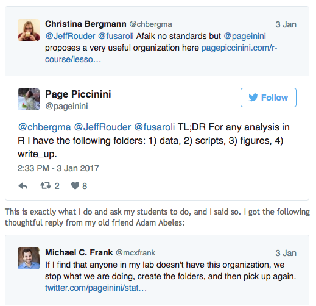
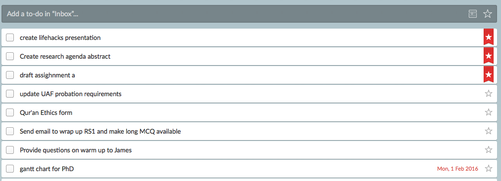

- > “any trick, shortcut, skill, or novel method that increases productivity and efficiency, in all walks of life” - Wikipedia
- Deal with information overload in work and life - 1st World problems
- Prioritise things that matter most to you
Mushtaq's Lifehacks
PACLab Open Science Week
Faisal Mushtaq
School of Psychology, Faculty of Medicine and Health, University of Leeds
What is Lifehacking?
My Approach to
- Work/Academia
- Apps
- Show and Tell: laptop Questions and answers (feel free to interrupt at any point)
Academia
- Motivation is a prerequisite for success in academia and elsewhere
- But academia is relatively unique in its flexibility
- Has pitfalls for those not self-motivated
- But huge benefits to work "wherever, whenever" (Shakira, 2001)
Knowledge and Productivity
Knowledge and productivity are like compound interest. Given two people with exactly the same ability, the one person who manages day in and day out to get in one more hour of thinking will be tremendously more productive over a lifetime. But, hard work alone is not enough—it must be sensible - Richard Hamming
Do you value your time?
- What do you to protect it?
- Lifehacking is about getting those marginal gains
- Of course- I also "waste" time but make conscious effort to improve
Time management theory
- "Getting Things Done: The Art of Stress-Free Productivity" David Allen
- Cited 574 times
- Practical steps to time management
- Limited cognitive resources
- off-load tasks to systems and software
- Check out GTD website for more information
Time management theory
5 basic GTD Principles
- Capture- collect what has your attention
- Clarify- process what it means- do I need to act, archive, save, trash?
- Organise- put things where they belong e.g. add item to checklist
- Reflect- look over your lists regularly
- Use your systems to perform actions
Thinking
Conflict in today's academic world
Shallow
- Not about who you find attractive...
- Things you can do without effort
- Phone calls- whilst waking/talking
- The majority of emails- more next
- Some journal articles
Deep
- Anything that is (a) difficult; and (b) takes more than 10 minutes to do
- The dichotomy comes from the fact that deep is what we should be getting paid for- yet shallow takes up most of our time
1. Capture
How do you capture things that grab your attention for later?
Note taking apps
- Evernote for information rich content- papers, presentations, audio recording and hand-written notes
- Simplenote for short text based notes
- Multi-platform sync and free
- Whenever you have a good idea- jot it down and "tag it" so you can find later- otherwise you WILL forget
- Physical and electronic lab notebook for experiments
2. Clarify
- Most amount of information and noise in your inbox
Inbox
- Get good habits now- because you will never have less email than you do now
- Save everything! (If you don't have enough space- find out how to export to gmail etc- e.g. via MailStore
- If coming to end of PhD- Set up email forwarding before your account expires
Inbox Zero
- David Allen’s “Getting Things Done” book
- 2 minute rule
- Archive generously
- Use Folders- lots of them
- Unsubscribe! Or set rules up… from: joebloggs@leeds.ac.uk > "Department_Emails" Folder
3. Organise
File Accessibility
- Replace your documents folder- delete it or vow never to use it
- Dropbox/OneDrive/Google Drive etc- Desktop, Web, Mobile App
- Remote Desktop - access to “always on” server and files from anywhere
- Partition hard drive where possible- making clear seperation between OS (superfluous) vs Data (essential)
- Automate data partition back ups and create image of OS after apps installation
File Structure

- Whatever you choose- by systematic
File Structure
Desktop = Working Memory- not LTM or file dump
Automate cleaning desktop- e.g. Hazel on Mac, File Juggler on Windows

4. Reflect and plan
- After capturing and organisation, you need to reflect to process
- Checklists- not just for surgeons and pilots...
- Wunderlist (others available- make sure cross-platform)
- 
- Be your own project manager:
- MeisterTask
- TeamGantt
5. Perform actions
- You are a thinking- not doing- machine
- This is why we have computers
- If you need to do something more than once- automate it
Repetition is for robots
- Keyboard Shortcuts, aText on Mac, AutoHotKey on Windows
- Forget using cognitive resources on memorising things- LastPass for password management (caution: possible MCI in later years)
- If This, Then That
Deep Thinking
- Is really hard!
- Make time for it (utilising GTD or similar)
- "Outsourcing work" to automatons for shallow thinking
- Protect your time from external distractions- block out time on your calendar
- Work in "batches"-fractal:throughout the day, week, year
- Pomodoro Technique- 25 min on- 5 min off
Essential Reading
- Productivity Ninja
- www.lifehacker.com Pre-2014 Articles
- www.43folders.com
- IFTT
Show and Tell
- Laptop tour